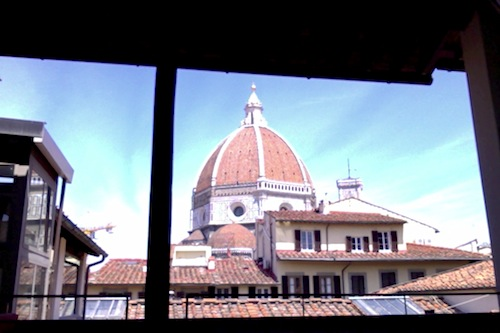

Oblate Library, Florence

It’s been wonderful being in Florence this week. I rented a bike and am cycling the narrow streets, through the town during the day and at night and by the river. The city unfolds quickly as I fly through it. Biking is some definition of freedom.
But almost better than the bike is the Oblate Library, near the Duomo. For the last few days I’ve taken over a table there, drooling over Brunelleschi’s dome and Giotto’s tower that are so beautiful they seem from some other, better world. The library has been the perfect place to work from, except for the erratic internet connection, as you can get lunch and sit outside under the wooden roof of the loggia. It’s a free library where anyone can walk into and crash onto the leather couches or sit under the wooden roof. It’s the kind of library that every city needs, even if it’s a city without a Duomo. It’s more than a library as there’s aperitivo after seven in the evening and it stays open late and you can sit in the chiostro on the stone or pick up a book to read where ever you want to. It’s what a library is meant to be.
Biblioteca delle Oblate
Via del Oriuolo, 26
· · · · · · · · · · · · · · · · · · · ·